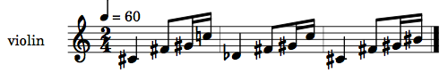
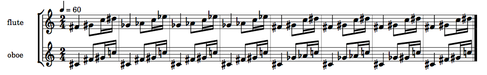
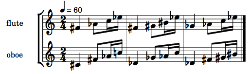

Enharmonics
+ Associated files
slippery chicken has three methods that provide options for
dealing with the enharmonic spellings of pitches,
namely respell-notes, enharmonic,
and enharmonics. Of these, respell-notes is
the only method that is also capable of processing large stretches of
pitches automatically. The other two only allow the user to directly
specify individual pitches for enharmonic respelling. All three will
be discussed here briefly.
+ enharmonic
The enharmonic method of the event class
allows the user to flip the enharmonic spelling of
one event by specifying the event object to
be changed. This method also has the keyword
arguments :written and :force-naturals.
By setting the :written argument to T, the
user can specify that the written pitch of the given
event object is to be changed (i.e. for the events of
transposing instruments) .
By default, this method can only be applied to pitches that already
have accidentals. By setting the :force-naturals
argument to T, the user can indicate that "white key
naturals" are also capable of being written enharmonically;
e.g., C4 becomes BS3 etc.
Using this method in conjunction with
a slippery-chicken object requires, first of all, that
the desired event object be retrieved using the
method get-event. It also requires that the optional
keyword argument :respell-notes of
the cmn-display and write-lp-data-for-all
methods be set to NIL (more on this in
the respell-notes section below).
An example of using the enharmonic method with
a slippery-chicken object may resemble the
following:
(let ((mini
(make-slippery-chicken
'+mini+
:ensemble '(((vn (violin :midi-channel 1))))
:set-palette '((1 ((cs4 fs4 gs4 c5))))
:set-map '((1 (1 1 1)))
:rthm-seq-palette '((1 ((((2 4) q - e s s -))
:pitch-seq-palette ((1 2 3 4)))))
:rthm-seq-map '((1 ((vn (1 1 1))))))))
(enharmonic (get-event mini 2 1 'vn))
(enharmonic (get-event mini 3 4 'vn) :force-naturals t)
(cmn-display mini :respell-notes nil)
(write-lp-data-for-all mini :respell-notes nil))
|  |
+ enharmonics
The enharmonics method is a method of
the slippery-chicken class that allows the user to
change the enharmonic spelling of pitches in a specified region of a
specified player's part.
The method has four required arguments, the first of which is
the slippery-chicken object that is to be modified, and
the last of which is the ID of the player whose part is to be
affected.
The second and third arguments are used to indicate the range of
bars and notes whose spellings are to be enharmonically flipped. Both
of these arguments can take either a single integer or a list of two
integers. If only an integer is given, it is read as a measure
number, and the method will be applied to all notes in the entire
bar. If a two-item list of integers is given, the two integers are
read as (bar-number note-number), and the method will
only be applied to the corresponding partial portions of the first
and last bars of the range indicated.
The method has two optional keyword arguments,
namely :written and :pitches. As with
the enharmonic method, setting the :written
argument to T specifies that the written
pitches are to be enharmonically flipped.
The :pitches argument allows the user to specify which
pitches are to be enharmonically respelled. By default, this argument
is set to NIL, resulting in all pitches in the specified
range being respelled. If a list of note-name symbols is given here
instead, only those specific pitches will be respelled.
As opposed to the enharmonic method, this method does
not have the optional :force-naturals argument, and will
therefore only affect pitches that already have accidentals.
When generating scores after calling this and the
enharmonic method, the respell-notes keyword
of cmn-display and write-lp-data-for-all
should be set to NIL so that spelling changes are not
readjusted automatically.
The following is an example of how the enharmonics
method may be used in composing a short piece.
(let ((mini
(make-slippery-chicken
'+mini+
:ensemble '(((fl (flute :midi-channel 1))
(ob (oboe :midi-channel 2))))
:set-palette '((1 ((cs4 fs4 gs4 c5 ds5))))
:set-limits-low '((fl (0 fs4 100 fs4)))
:set-limits-high '((ob (0 c5 100 c5)))
:avoid-used-notes nil
:set-map '((1 (1 1 1 1 1 1 1 1)))
:rthm-seq-palette '((1 ((((2 4) q - e s s -))
:pitch-seq-palette ((1 2 3 4)))))
:rthm-seq-map '((1 ((fl (1 1 1 1 1 1 1 1))
(ob (1 1 1 1 1 1 1 1))))))))
(enharmonics mini 2 4 'fl)
(enharmonics mini '(5 1) '(7 2) 'ob :pitches '(fs4 gs4))
(cmn-display mini :respell-notes nil)
(write-lp-data-for-all mini :respell-notes nil))
|  |
+ respell-notes
The respell-notes method is a method of the
slippery-chicken class that passes through the entire
specified slippery-chicken object and changes some of its
pitches to their enharmonic equivalents to produce more sensible
spellings of consecutive notes in the score. By default, it is called
automatically in the cmn-display and
write-lp-data-for-all slippery-chicken class
methods.
By default this method automatically chooses which pitches to
respell based on a complex algorithm. It must be noted that decisions
on enharmonic spelling are not only complex, but that some situations
allow for multiple equally legitimate spellings, and that the
parameters for such decisions can also be a matter of taste and
theoretical approach. If the user does not agree with any of the
automatic decisions made by respell-notes, individual
changes can be specifically reverted by methods such as
enharmonic or enharmonics, or the method
can be disabled altogether when calling cmn-display or
write-lp-data-for-all.
The method also has an optional argument that takes a list
specifying the notes for which the pitch is to be enharmonically
respelled, in the format
'((player (bar-num note-num))).
The notes indicated as such can be thought of as corrections as they
will be enharmonically 're-flipped' once the respelling algorithm has
been applied.
As mentioned, by default, the respell-notes method is
automatically called within the cmn-display and
write-lp-data-for-all methods. However, it can also be
called separately as post-generation editing method. If this
approach is chosen, or if any other post-generation enharmonic
methods are used, the :respell-notes argument of
cmn-display and write-lp-data-for-all must
be set to NIL, otherwise any or all edits may be
automatically overwritten.
Using the optional list argument with the method as a post-generation editing method may look like this:
(let ((mini
(make-slippery-chicken
'+mini+
:ensemble '(((fl (flute :midi-channel 1))
(ob (oboe :midi-channel 2))))
:set-palette '((1 ((cs4 fs4 gs4 c5 ds5))))
:set-limits-low '((fl (0 fs4 100 fs4)))
:set-limits-high '((ob (0 c5 100 c5)))
:avoid-used-notes nil
:set-map '((1 (1 1 1)))
:rthm-seq-palette '((1 ((((2 4) q - e s s -))
:pitch-seq-palette ((1 2 3 4)))))
:rthm-seq-map '((1 ((fl (1 1 1))
(ob (1 1 1))))))))
(respell-notes mini '((fl (2 1) (2 2) (2 3))
(ob (3 2) (3 3) (3 4))))
(cmn-display mini :respell-notes nil)
(write-lp-data-for-all mini :respell-notes nil))
|  |